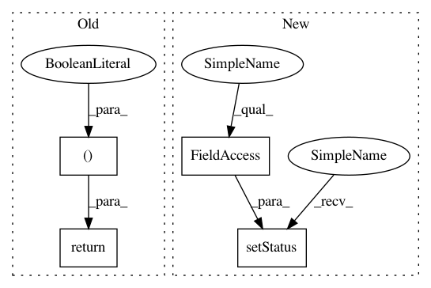

2a1e5ea5c97250c19da52e7fde4c3dd2fa5fb045,scripts/TestHarness/testers/RavenPython.py,RavenPython,checkRunnable,#RavenPython#Any#,74
Before Change
def checkRunnable(self, option):
i = 0
if len(self.minimum_libraries) % 2:
return (False,"skipped (libraries are not matched to versions numbers: "+str(self.minimum_libraries)+")")
while i < len(self.minimum_libraries):
libraryName = self.minimum_libraries[i]
libraryVersion = self.minimum_libraries[i+1]
found, message, actualVersion = RavenUtils.moduleReport(libraryName,libraryName+".__version__")
After Change
return False
if self.specs["requires_swig2"] and not RavenPython.has_swig2:
self.setStatus("skipped (No swig 2.0 found)", self.bucket_skip)
return False
missing,too_old, notQA = RavenUtils.checkForMissingModules()
if len(missing) > 0:
self.setStatus("skipped (Missing python modules: "+" ".join(missing)+
In pattern: SUPERPATTERN
Frequency: 3
Non-data size: 4
Instances
Project Name: idaholab/raven
Commit Name: 2a1e5ea5c97250c19da52e7fde4c3dd2fa5fb045
Time: 2017-09-27
Author: joshua-cogliati-inl@users.noreply.github.com
File Name: scripts/TestHarness/testers/RavenPython.py
Class Name: RavenPython
Method Name: checkRunnable
Project Name: idaholab/raven
Commit Name: 2a1e5ea5c97250c19da52e7fde4c3dd2fa5fb045
Time: 2017-09-27
Author: joshua-cogliati-inl@users.noreply.github.com
File Name: scripts/TestHarness/testers/RavenErrors.py
Class Name: RavenErrors
Method Name: checkRunnable
Project Name: idaholab/raven
Commit Name: 2a1e5ea5c97250c19da52e7fde4c3dd2fa5fb045
Time: 2017-09-27
Author: joshua-cogliati-inl@users.noreply.github.com
File Name: scripts/TestHarness/testers/RavenPython.py
Class Name: RavenPython
Method Name: checkRunnable
Project Name: idaholab/raven
Commit Name: 2a1e5ea5c97250c19da52e7fde4c3dd2fa5fb045
Time: 2017-09-27
Author: joshua-cogliati-inl@users.noreply.github.com
File Name: scripts/TestHarness/testers/CrowPython.py
Class Name: CrowPython
Method Name: checkRunnable